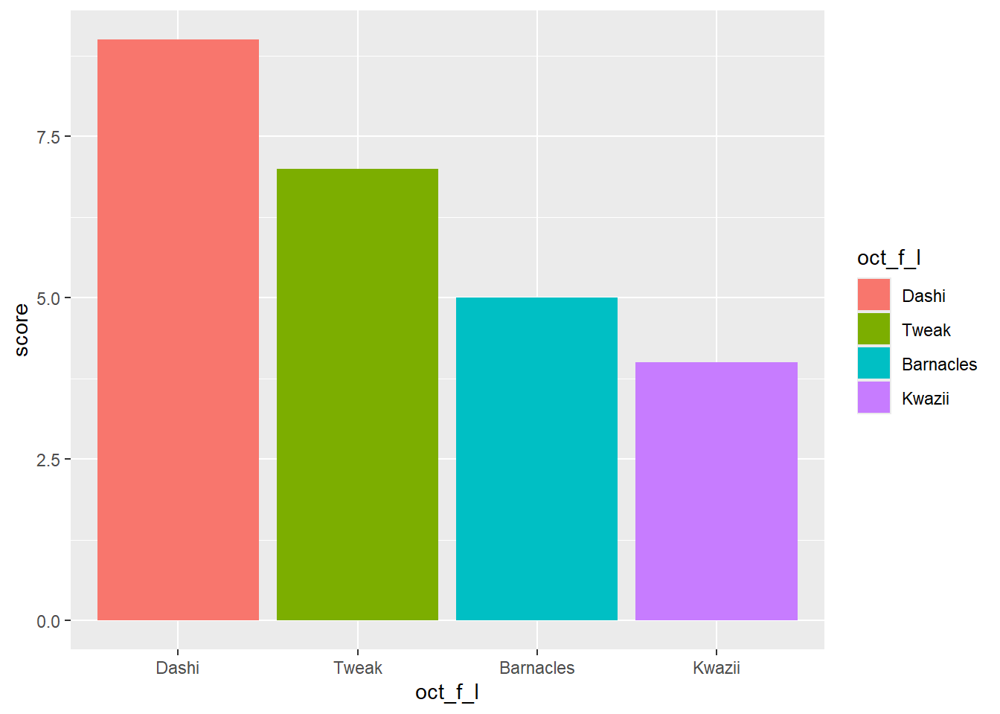
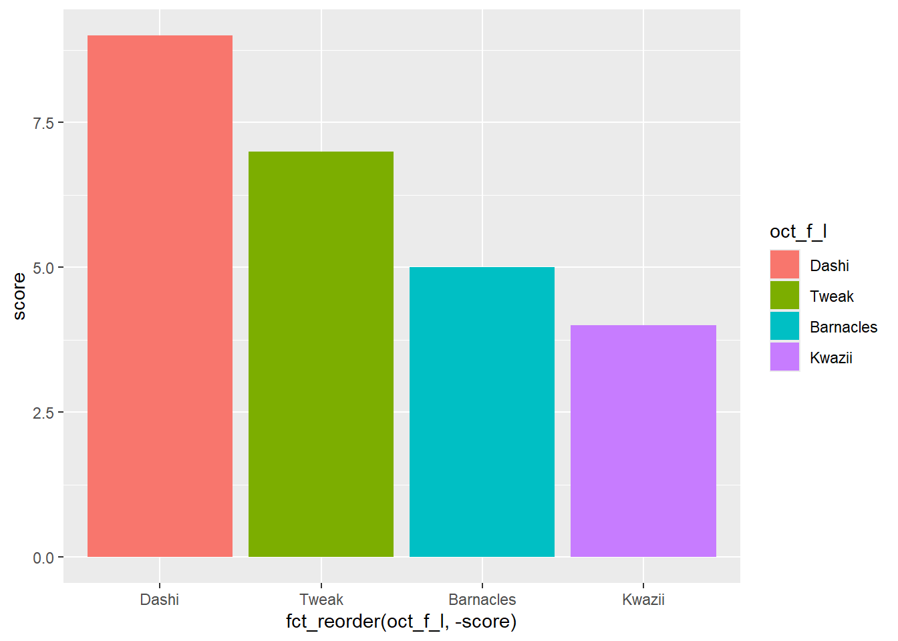
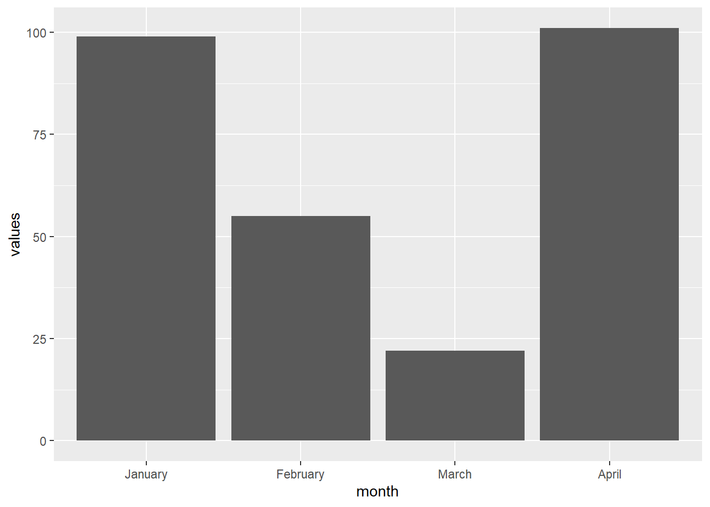
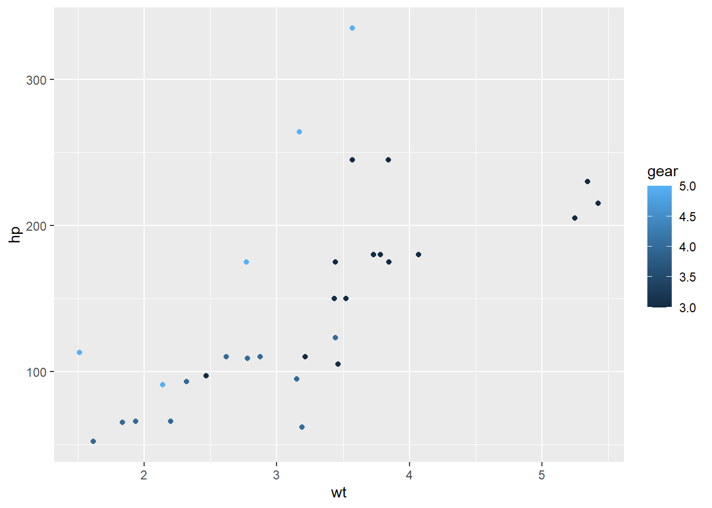
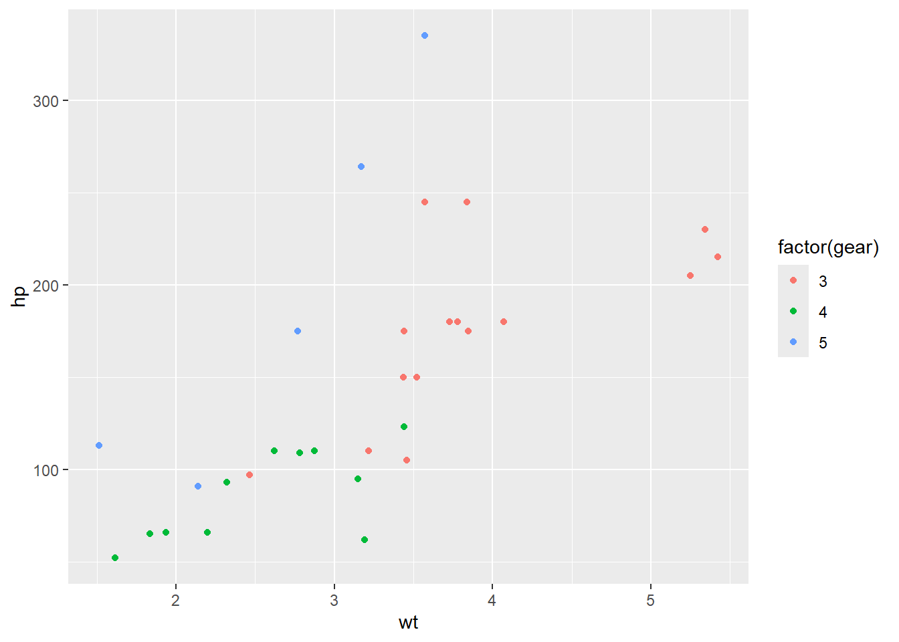

# packages for this session
library(dplyr)
library(forcats)
library(ggplot2)
library(lubridate)
library(openxlsx)
library(readxl)R beginner’s club 2024-09-12
Factors are confusing!
Factors are confusing, but also factors are powerful. The reason they’re powerful is they give you proper tools for managing categorical data, and especially caregorical data that has a fixed order. Let’s set up an example to play with. Take an ordinary vector of character strings:
oct_s <- c("Tweak", "Barnacles", "Dashi", "Kwazii")We can convert that into a factor:
oct_f <- factor(oct_s)To see what difference that’s made, let’s call up both the string vector and the factor:
oct_s[1] "Tweak" "Barnacles" "Dashi" "Kwazii" oct_f[1] Tweak Barnacles Dashi Kwazii
Levels: Barnacles Dashi Kwazii TweakSo we’ve gained a new part in the factor: levels. You can think of levels as the possible values that our factor might contain. By default, when you create a factor from some strings, it takes the unique values, puts them in alphabetical order, and uses those as the levels:
levels(oct_f) # alphabetical[1] "Barnacles" "Dashi" "Kwazii" "Tweak" In fact, if you look carefully at the structure of a factor, you’ll see something surprising:
typeof(oct_f)[1] "integer"So factors are basically vectors of integers, with each integer standing in for one of the possible levels. This makes factors more efficient than ordinary strings:
# guess who's been reading Advanced R
lobstr::obj_size(sample(oct_s, 100000, T))800.28 kBlobstr::obj_size(sample(oct_f, 100000, T))400.70 kBIt also means that we get to use some of the number-oriented tools to work with categorical data:
summary(sample(oct_s, 100000, T)) Length Class Mode
100000 character character summary(sample(oct_f, 100000, T)) # nice frequency table with no effortBarnacles Dashi Kwazii Tweak
24854 24812 25414 24920 Things get really interesting when we realise we can change the order of levels from the default alphabetical ordering:
oct_f_l <- factor(oct_s, levels = c("Dashi", "Tweak", "Barnacles", "Kwazii"))
oct_f_l[1] Tweak Barnacles Dashi Kwazii
Levels: Dashi Tweak Barnacles KwaziiThat’s very interesting, because the ordering of factors gets preserved in all kinds of places:
oct_f_l_tibble <- tibble(oct_f_l,
score = c(7,5,9,4))
oct_f_l_tibble |>
ggplot() +
geom_col(aes(x = oct_f_l, y = score, fill = oct_f_l)) 
oct_f_l_tibble |>
group_by(oct_f_l) |>
summarise(score = score * 20)# A tibble: 4 × 2
oct_f_l score
<fct> <dbl>
1 Dashi 180
2 Tweak 140
3 Barnacles 100
4 Kwazii 80If you want to get fancy with factors, the forcats package has some great tools. Some quick examples:
oct_s |>
factor() |>
fct_inorder() |> # build a factor with levels in order of appearance
levels()[1] "Tweak" "Barnacles" "Dashi" "Kwazii" oct_plot <- oct_f_l_tibble |>
ggplot(aes(y = score, fill = oct_f_l))
oct_plot +
geom_col(aes(x = fct_reorder(oct_f_l, c(4,2,3,1)))) # re-order levels in placeoct_plot +
geom_col(aes(x = fct_reorder(oct_f_l, -score))) # order levels by other values
example 1: forcing non-alphabetical ordering
month_v <- month.name[1:4]
month_f <- factor(month_v, levels = c("January", "February", "March", "April"))
# or fct_inorder(factor(month.name[1:4])) would get you there too
tibble(month = month_f,
values = c(99,55,22,101)) |>
ggplot() +
geom_col(aes(x = month, y = values))
tibble(month = month_f,
values = c(99,55,22,101)) |>
ggplot() +
geom_col(aes(x = fct_reorder(month, -values), y = values))example 2: dealing with numeric categories
mtcars |>
ggplot() +
geom_point(aes(x = wt, y = hp, colour = gear)) # continuous presentation of categories
mtcars |>
ggplot() +
geom_point(aes(x = wt, y = hp, colour = factor(gear)))
How do I filter based on dates?
There are a couple of tips here. First, make sure that you’re working with dates from as early in the process as possible. Don’t try and cheat with text strings:
dat <- tibble(
date = c("01/02/2024", "01/04/2024", "01/06/2024"),
val = c("one", "two", "three")
) |>
mutate(date = dmy(date))
dat# A tibble: 3 × 2
date val
<date> <chr>
1 2024-02-01 one
2 2024-04-01 two
3 2024-06-01 threeThe second big bit of advice is to pick an approach to dates, and stick with it for everything. I like lubridate, but you might prefer doing dates in base R, or data.table, or something else. Whichever system you prefer, stick to one - it’ll save masses of pain in the long-run.
I like lubridate for this sort of work, because (to my mind) it has the easiest set of parsing functions to make dates from values:
ydm("2021-28-4") # including some horrible formats[1] "2021-04-28"ym("199907")[1] "1999-07-01"ym("199907") + days(11) # with additional setting[1] "1999-07-12"ceiling_date(ym("199907"), "months")[1] "1999-08-01"You should be able to dplyr::filter your data in a few ways:
dat |>
filter(date == "2024-04-01") # assuming you remember how R dates are formatted# A tibble: 1 × 2
date val
<date> <chr>
1 2024-04-01 two dat |>
filter(date == ymd("2024-04-01")) # probably safer to convert the string to a date# A tibble: 1 × 2
date val
<date> <chr>
1 2024-04-01 two dat |>
filter(date >= ymd("2022-04-01")) # inequality filtering# A tibble: 3 × 2
date val
<date> <chr>
1 2024-02-01 one
2 2024-04-01 two
3 2024-06-01 threedat |>
filter(date >= ymd("2022-04-01") + years(2)) # filtering with offset# A tibble: 2 × 2
date val
<date> <chr>
1 2024-04-01 two
2 2024-06-01 threedat |>
filter(date %within% interval("2024-03-01", "2024-05-01")) # %within% is basically %in% for dates# A tibble: 1 × 2
date val
<date> <chr>
1 2024-04-01 two How can I read specific sheets out of an Excel file?
If you’re using readxl, there’s a nice sheet = argument to allow you to read data directly from one sheet:
fn <- "data/s01_data.xlsx"
readxl::read_xlsx(fn, sheet = "occupancy_sh") |>
slice(1:4) |>
knitr::kable()| date | WardName | OccupiedBeds | BedComp | ClosedBed |
|---|---|---|---|---|
| 2022-11-02 | A | 16 | 20 | 2 |
| 2022-11-02 | B | 20 | 20 | 0 |
| 2022-11-02 | C | 21 | 22 | 1 |
| 2022-11-02 | D | 25 | 30 | 2 |
You can also pull out all the sheet names from a workbook:
excel_sheets(fn)[1] "occupancy_sh" "wards_sh" If you want to be fancy, you can iterate through the sheets:
lapply(excel_sheets(fn),
read_excel,
path = fn)[[1]]
# A tibble: 1,500 × 5
date WardName OccupiedBeds BedComp ClosedBed
<dttm> <chr> <dbl> <dbl> <dbl>
1 2022-11-02 00:00:00 A 16 20 2
2 2022-11-02 00:00:00 B 20 20 0
3 2022-11-02 00:00:00 C 21 22 1
4 2022-11-02 00:00:00 D 25 30 2
5 2022-11-02 00:00:00 E 15 22 3
6 2022-11-03 00:00:00 A 14 20 0
7 2022-11-03 00:00:00 B 19 20 3
8 2022-11-03 00:00:00 C 18 22 0
9 2022-11-03 00:00:00 D 26 30 0
10 2022-11-03 00:00:00 E 13 22 0
# ℹ 1,490 more rows
[[2]]
# A tibble: 5 × 3
WardName LocationName HSCP
<chr> <chr> <chr>
1 A Hosp1 HSCP_1
2 B Hosp2 HSCP_2
3 C Hosp1 HSCP_1
4 D Hosp1 HSCP_1
5 E Hosp3 HSCP_1How can I swap colour palettes in ggplot
There are several different strategies that might be useful for tweaking ggplot colours. Let’s set up a quick factors plot based on months:
factors_plot <- tibble(month = month_f,
values = c(99,55,22,101)) |>
ggplot() +
geom_col(aes(x = fct_reorder(month, -values),
y = values,
fill = fct_reorder(month, -values)))
factors_plot
You can manually assign colours. R recognises about 600 different ordinary colour names:
factors_plot +
scale_fill_manual(values = c("red", "green", "black", "grey"))Or, with more precision, you can specify hex values:
factors_plot +
scale_fill_manual(values = c("#115599", "#aa1199", "black", "#ff6600"))This is fine for simple plots, or when you have e.g. specific colour palettes to use (like you might find in an organisational style manual). But for one-off or more sophisticated uses, it’s definitely worth exploring ColorBrewer - especially because this has great support for producing accessible colour palettes:
factors_plot +
scale_fill_brewer(palette = "RdBu")Finally, a nice weird trick: you can reverse the default order that ggplot creates fill colours using scales::hue_pal:
factors_plot +
scale_fill_manual(values = scales::hue_pal(direction = 1)(4))factors_plot +
scale_fill_manual(values = scales::hue_pal(direction = -1)(4))